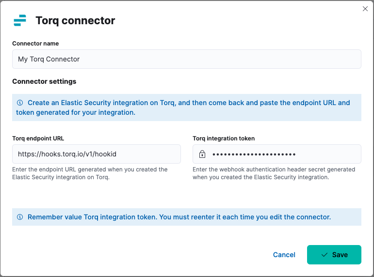
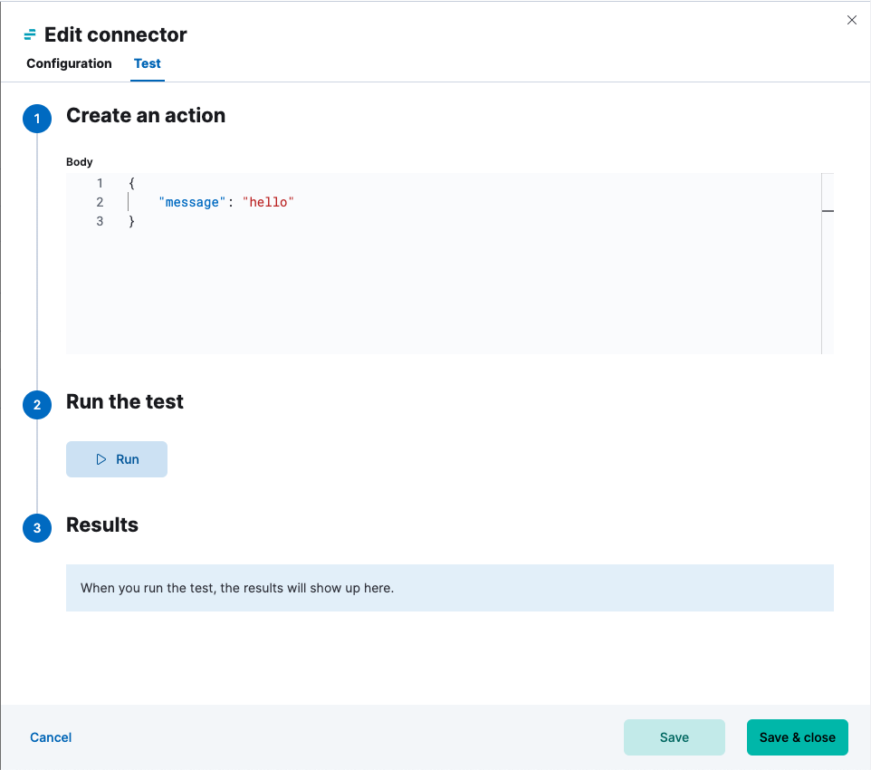

Torq connector and action
editThe Torq connector uses a Torq webhook to trigger workflows with Kibana actions.
Create connectors in Kibana
editYou can create connectors in Stack Management > Connectors or as needed when you’re creating a rule. For example:

Connector configuration
editTorq connectors have the following configuration properties:
- Name
- The name of the connector. The name is used to identify a connector in the Stack Management UI connector listing, and in the connector list when configuring an action.
- Torq endpoint URL
- Endpoint URL (webhook) of the Elastic Security integration you created in Torq.
- Torq authentication header secret
- Secret of the webhook authentication header.
Test connectors
editYou can test connectors as you’re creating or editing the connector in Kibana. For example:

Torq actions have the following configuration properties.
- Body
- JSON payload to send to Torq.